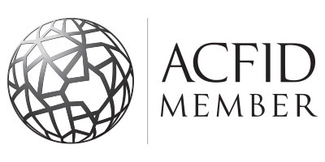

Funds raised from our Syria Crisis Appeal in March provided 3,314 hygiene kits for families made homeless by the ongoing conflict in Syria. These kits helped survivors like Razdan and Mouna* maintain their health and dignity. *Names have been changed to protect the individuals’ privacy.
IFRC/Ibrahim Malla
Our international work aims to save lives, reduce suffering and enhance human dignity. This is especially so in disasters, armed conflicts and humanitarian crises.
Our work focuses on the Asia-Pacific region, home to 90% of the 19.3 million people displaced by disasters in 2014. We work with the most disadvantaged families to protect lives and homes when disasters strike, with communities to prepare emergency plans and local response teams, and with countries to implement disaster and humanitarian laws.
We work through local partners, Red Cross and Red Crescent National Societies, who have a specific mandate to support public authorities in their humanitarian work. We act as a broker of knowledge, resources and skills for our partners.
Practical solutions to health crises
Red Cross was on the frontlines of the Ebola response in Liberia, Sierra Leone and Guinea: providing medical care to 1,240 patients, burying 27,099 bodies safely and with dignity, and going door to door to help 6.4 million people better understand the disease and how to protect themselves, and providing emotional support to those affected by Ebola.
West Australian nurse Anne Carey joined the fight against Ebola, working at a Red Cross treatment centre in Sierra Leone.
Michael Duff/IFRC
In Myanmar, 10,000 people in 14 remote villages took practical steps to reduce their risk of injuries and communicable diseases. With help from Red Cross, they installed safe drinking water systems and toilets, trained local first aid teams and launched a village health fund to cover emergency medical costs. An evaluation of the project recorded an almost 100% increase in healthy behaviours such as using mosquito nets to prevent malaria and hand washing to avoid diarrhoea. While the initial program focused on disaster risks, community feedback indicated this was less of an issue than anticipated.
Ready when disasters strike
From the first chaotic moments after Nepal’s 7.8 magnitude earthquake, Nepal Red Cross volunteers were in the streets providing first aid to their injured neighbours. As Cyclone Pam approached Vanuatu with 370kph winds, Vanuatu Red Cross helped people evacuate to safe shelters and sent radio warnings to outer islands. As a result, this category five storm resulted in only 11 deaths. And before Typhoon Hagupit reached the Philippines in October 2014, Philippine Red Cross assisted in the largest peacetime evacuation in history, saving thousands of lives.
Australian Red Cross supported our partners to prepare for these disasters. We helped train first aid and response teams, developed early warning systems, pre-positioned relief stocks and assisted with region-wide planning.

Lucina, Juris and their children celebrate the first day in their new home, built using corrugated iron sheets, tools and training from Red Cross. More than 6,000 homes were rebuilt with Red Cross help after Typhoon Haiyan in 2013; these homes withstood Typhoon Hagupit in 2014 with minimal or no damage.
Australian Red Cross/Noel Celis
Building resilient communities
An evaluation in Timor-Leste found that Red Cross water systems lasted far longer than the national average, improving family health and creating new livelihoods in six districts. In Vietnam, our work in climate change adaptation saw farmers in An Giang and Kien Giang adopt new models of pig and mushroom farming, thus improving their livelihoods and increasing environmental sustainability.
Evaluations from Timor-Leste and Myanmar identified that benefits of these programs can be increased with greater involvement of women and people with a disability. This will become an essential component of new program designs.
Protecting the most vulnerable
The Nepal earthquake response reflected our commitment to gender, child protection and diversity. We made safe spaces available to women and children, worked closely with lesbian, gay, bisexual, transgender and intersex groups, and supported people with disabilities, meeting their unique needs in evacuation camps and shelters.
Australian Red Cross remains a strong advocate for child protection in our Movement, supporting the International Federation and 28 National Societies to develop child protection policies.
Our international teams have completed a year-long process of improving efficiency and accountability. As we move into 2015/2016 we are sharpening our focus and streamlining a large number of small and unrelated projects into six integrated program themes.
 Australian Red Cross is a signatory to the Australian Council for International Aid and Development (ACFID) Code of Conduct and is committed to full adherence to its requirements. The ACFID Code of Conduct offers a mechanism to address concerns relating to signatories’ conduct. Complaints against Australian Red Cross may be initiated by any member of the public and lodged with the ACFID Code of Conduct Committee at acfid.asn.au/code-of-conduct/complaints or for further information on the ACFID Code please see ACFID website acfid.asn.au.